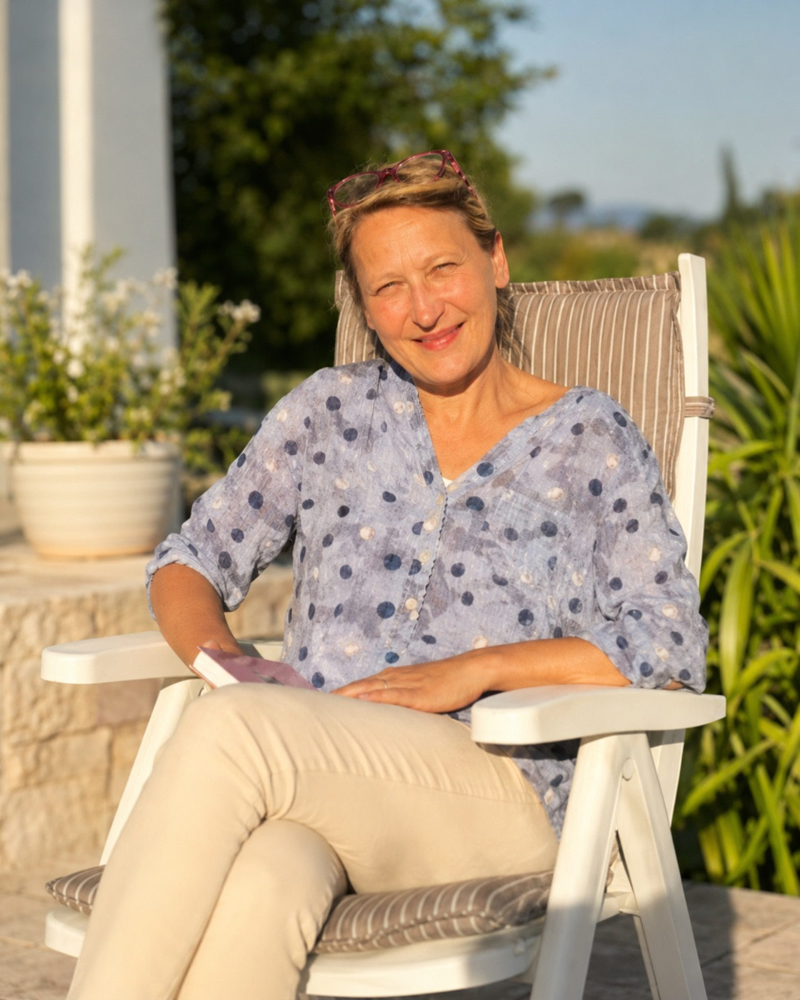

Wo Wirkung konkret wird
Neben unserem eigenen Angebot begleiten wir Initiativen, die aus einer Berufung entstanden sind – mit Strategie, unternehmerischer Methodik und der Frage, wie gute Absicht tragfähig wird.

Wegfinder e.V.
Birgit Nandzik schafft mit Wegfinder e.V. einen Ort, an dem pflegende Angehörige nicht allein bleiben. Im Pflegecafé in Oschersleben entstehen Begegnung, Beratung und stundenweise Entlastung – dort, wo es im ländlichen Raum bislang an wohnortnaher Unterstützung fehlt.
Im Zentrum steht die Unterstützung von Angehörigen und Pflegebedürftigen – nicht durch Abhängigkeit, sondern durch Stärkung. Es geht um Hilfe zur Selbsthilfe. Um Würde. Um Orientierung in einer Lebensphase, die oft von Überforderung geprägt ist.
Wir begleiten Wegfinder seit 2026 mit Strategie, unternehmerischer Methodik und Bildungsanbindung.
Wirkung, die allein vom Spendenklima abhängt, endet irgendwann. Wirkung, die sich selbst trägt, bleibt.
Wenn Sie das anspricht, sprechen wir darüber.
Ein kleiner Kreis, sechs Monate, Arbeit an realen unternehmerischen Entscheidungen.
Für den nächsten Impact Circle vormerken